Time series transform#
Convolutional transform#
Wildboar implements two convolutional transformation methods Rocket [1] and Hydra [2], described by Dempsar et al. Both algorithms employ random convolutional kernels, but in sligtly different manners. In Rocket, each kernel is applied to each time series and the maximum activation value and the average number of positive activations are recorded. In Hydra, the kernels are partitioned into groups and for each exponential dilation and padding combination each kernel is applied to each time series and the number of times and the number of times each kernel has the highest activation value and the lowest is recorded. Then the features corresponds to the number of times a kernel had the in-group highest activation and the average of the lowest activation.
For the purpose of this example, we load the MoteStrain dataset for the UCR time series archive and split it into two parts: one for fitting the transformation and one for evaluating the predictive performance.
from wildboar.datasets import load_dataset
from sklearn.model_selection import train_test_split
X, y = load_dataset("MoteStrain")
X_train, X_test, y_train, y_test = train_test_split(X, y, random_state=1)
The dataset contains 954 samples with 84 time steps each. Of the samples, 510 is labeled as 1.0 and 444 labeled as 2.0. Here, we plot the time series.
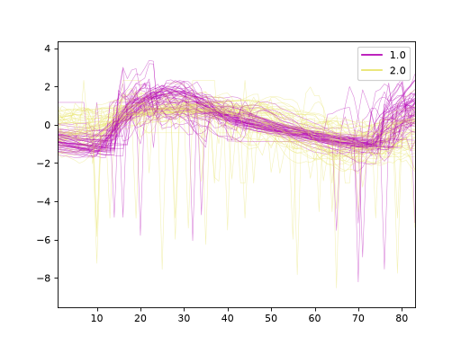
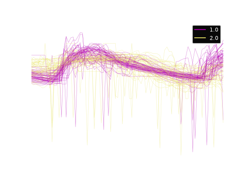
Hydra transform#
In Wildboar, we extensively utilize the functionalities of scikit-learn and
can directly employ these features. We construct a pipeline wherein we
initially transform each time series into the representation dictated by
Hydra (utilizing the default parameters n_groups=64 and n_kernels=8).
The subsequent stages of the pipeline include the application of a sparse
scaler, which compensates for the sparsity induced by the transformation (it is
important to note that we count the frequency of occurrences where a kernel
exhibits the highest activation, and in numerous instances, a single kernel may
never achieve this), and ultimately, the pipeline employs a standard Ridge
classifier on the transformed data.
from wildboar.datasets.preprocess import SparseScaler
from wildboar.transform import HydraTransform
from sklearn.pipeline import make_pipeline
hydra = make_pipeline(HydraTransform(random_state=1), SparseScaler())
hydra.fit(X_train, y_train)
Pipeline(steps=[('hydratransform', HydraTransform(random_state=1)),
('sparsescaler', SparseScaler())])In a Jupyter environment, please rerun this cell to show the HTML representation or trust the notebook. On GitHub, the HTML representation is unable to render, please try loading this page with nbviewer.org.
Parameters
Parameters
Fitted attributes
| Name | Type | Value |
|---|---|---|
|
embedding_
embedding_: Embedding The underlying embedding |
AttributeEmbedding | <wildboar.tra...x7f5dead3a200> |
| n_dims_in_ | int | 1 |
| n_features_in_ | int | 84 |
| n_timesteps_in_ | int | 84 |
Fitted attributes
| Name | Type | Value |
|---|---|---|
| mu_ | ndarray[float64](4096,) | [2.46,1.16,1.79,...,1.4 ,3.55,2.01] |
| n_dims_in_ | int | 1 |
| n_features_in_ | int | 4096 |
| n_timesteps_in_ | int | 4096 |
| sigma_ | ndarray[float64](4096,) | [0.69,0.34,0.62,...,0.53,0.61,0.58] |
100 of 4,096 features
| x0 |
| x1 |
| x2 |
| x3 |
| x4 |
| x5 |
| x6 |
| x7 |
| x8 |
| x9 |
| x10 |
| x11 |
| x12 |
| x13 |
| x14 |
| x15 |
| x16 |
| x17 |
| x18 |
| x19 |
| x20 |
| x21 |
| x22 |
| x23 |
| x24 |
| x25 |
| x26 |
| x27 |
| x28 |
| x29 |
| x30 |
| x31 |
| x32 |
| x33 |
| x34 |
| x35 |
| x36 |
| x37 |
| x38 |
| x39 |
| x40 |
| x41 |
| x42 |
| x43 |
| x44 |
| x45 |
| x46 |
| x47 |
| x48 |
| x49 |
| x50 |
| x51 |
| x52 |
| x53 |
| x54 |
| x55 |
| x56 |
| x57 |
| x58 |
| x59 |
| x60 |
| x61 |
| x62 |
| x63 |
| x64 |
| x65 |
| x66 |
| x67 |
| x68 |
| x69 |
| x70 |
| x71 |
| x72 |
| x73 |
| x74 |
| x75 |
| x76 |
| x77 |
| x78 |
| x79 |
| x80 |
| x81 |
| x82 |
| x83 |
| x84 |
| x85 |
| x86 |
| x87 |
| x88 |
| x89 |
| x90 |
| x91 |
| x92 |
| x93 |
| x94 |
| x95 |
| x96 |
| x97 |
| x98 |
| x99 |
We can inspect the resulting transformation by using the transform function.
X_test_transform = hydra.transform(X_test)
X_test_transform[0]
array([ 0.53921955, -0.39192971, -0.60035454, ..., -0.36929508,
0.5286341 , 1.08999765], shape=(4096,))
The transformed array contains 4096 features.
We can use principal component analysis (PCA)
to identify the combination of attributes that account for most of the variance
in the data.
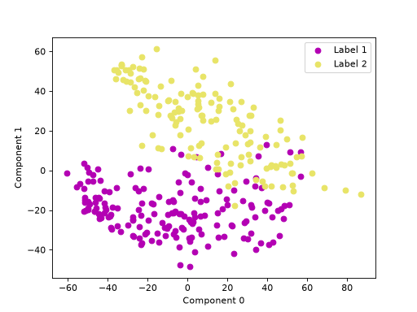
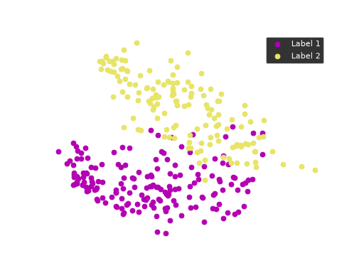
The first two components explain 23.04 and 17.10 percent of the variance.
Rocket transform#
The Rocket transformation employs a large, randomly generated set of kernels
to enable the transformation process. By default, the parameter n_kernels
is assigned the value of \(10000\) kernels. Furthermore, we utilize the
pipelines offered by scikit-learn to normalize the feature representation,
ensuring a mean of zero and a standard deviation of one.
from sklearn.preprocessing import StandardScaler
from wildboar.transform import RocketTransform
rocket = make_pipeline(RocketTransform(), StandardScaler())
rocket.fit(X_test, y_test)
Pipeline(steps=[('rockettransform', RocketTransform()),
('standardscaler', StandardScaler())])In a Jupyter environment, please rerun this cell to show the HTML representation or trust the notebook. On GitHub, the HTML representation is unable to render, please try loading this page with nbviewer.org.
Parameters
Parameters
Fitted attributes
| Name | Type | Value |
|---|---|---|
|
embedding_
embedding_: Embedding The underlying embedding |
AttributeEmbedding | <wildboar.tra...x7f5deaba6fc0> |
| n_dims_in_ | int | 1 |
| n_features_in_ | int | 84 |
| n_timesteps_in_ | int | 84 |
Parameters
Fitted attributes
100 of 2,000 features
| x0 |
| x1 |
| x2 |
| x3 |
| x4 |
| x5 |
| x6 |
| x7 |
| x8 |
| x9 |
| x10 |
| x11 |
| x12 |
| x13 |
| x14 |
| x15 |
| x16 |
| x17 |
| x18 |
| x19 |
| x20 |
| x21 |
| x22 |
| x23 |
| x24 |
| x25 |
| x26 |
| x27 |
| x28 |
| x29 |
| x30 |
| x31 |
| x32 |
| x33 |
| x34 |
| x35 |
| x36 |
| x37 |
| x38 |
| x39 |
| x40 |
| x41 |
| x42 |
| x43 |
| x44 |
| x45 |
| x46 |
| x47 |
| x48 |
| x49 |
| x50 |
| x51 |
| x52 |
| x53 |
| x54 |
| x55 |
| x56 |
| x57 |
| x58 |
| x59 |
| x60 |
| x61 |
| x62 |
| x63 |
| x64 |
| x65 |
| x66 |
| x67 |
| x68 |
| x69 |
| x70 |
| x71 |
| x72 |
| x73 |
| x74 |
| x75 |
| x76 |
| x77 |
| x78 |
| x79 |
| x80 |
| x81 |
| x82 |
| x83 |
| x84 |
| x85 |
| x86 |
| x87 |
| x88 |
| x89 |
| x90 |
| x91 |
| x92 |
| x93 |
| x94 |
| x95 |
| x96 |
| x97 |
| x98 |
| x99 |
We can inspect the resulting transformation.
X_test_transform = rocket.transform(X_test)
X_test_transform[0]
array([-0.01008204, -0.55968557, -0.22836955, ..., -0.5716535 ,
0.69026918, -0.52941976], shape=(2000,))
In contrast to Hydra whose transformation size depends on the number of time steps in the input, the Rocket transformation has a fixed size only dependent on the number of kernels. As such, the resulting transformation consists of \(10000\) features.
We can use principal component analysis (PCA)
to identify the combination of attributes that account for most of the variance
in the data.
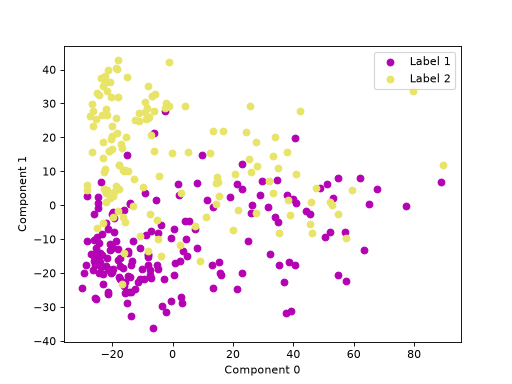
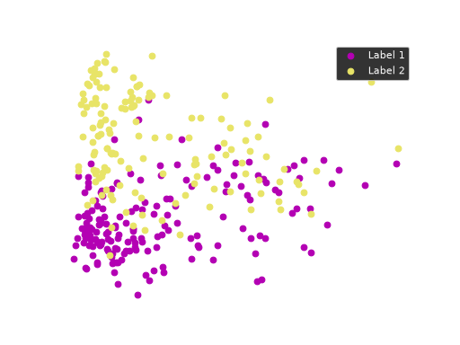
The first two components explain 34.44 and 16.96 percent of the variance.
Interval-based transform#
Interval-based time series transformation is a powerful technique used in time series analysis to simplify and enhance the understanding of temporal data. Instead of analyzing each individual time point, this method groups the data into predefined intervals, such as days, weeks, or months, and summarizes the information within each interval. By aggregating data in this way, we can reduce noise and more easily identify significant patterns, trends, and seasonal behaviors.
This approach is particularly beneficial in situations where data exhibits periodicity, or when we need to focus on broader trends rather than detailed, point-by-point fluctuations. By transforming time series data into intervals, we can gain clearer insights and make more informed decisions based on the summarized data.
We can import IntervalTransform:
from wildboar.transform import IntervalTransform
Fixed intervals#
In the equally sized interval-based transformation method, the time series data
is divided into a specified number of equal-sized intervals, referred to as
n_interval. This approach is particularly useful when we want to analyze the
data in consistent chunks, regardless of the total duration or length of the
time series.
f = IntervalTransform(intervals="fixed", n_intervals=20)
f.fit(X_train, y_train)
IntervalTransform(n_intervals=20)In a Jupyter environment, please rerun this cell to show the HTML representation or trust the notebook.
On GitHub, the HTML representation is unable to render, please try loading this page with nbviewer.org.
Parameters
Fitted attributes
| Name | Type | Value |
|---|---|---|
| embedding_ | AttributeEmbedding | <wildboar.tra...x7f5dea9e2160> |
| n_dims_in_ | int | 1 |
| n_features_in_ | int | 84 |
| n_timesteps_in_ | int | 84 |
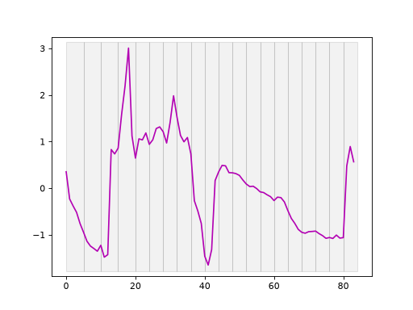
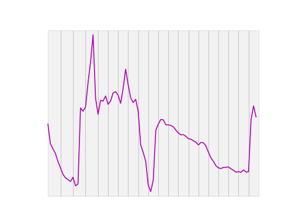
We can also randomly sample equally sized intervals by selecting a specific
sample of those intervals, defined by sample_size. This approach allows us
to focus on a subset of the intervals for detailed analysis, rather than
considering all intervals.
f = IntervalTransform(
intervals="fixed", n_intervals=30, sample_size=0.5, random_state=1
)
f.fit(X_train, y_train)
IntervalTransform(n_intervals=30, random_state=1, sample_size=0.5)In a Jupyter environment, please rerun this cell to show the HTML representation or trust the notebook.
On GitHub, the HTML representation is unable to render, please try loading this page with nbviewer.org.
Parameters
Fitted attributes
| Name | Type | Value |
|---|---|---|
| embedding_ | AttributeEmbedding | <wildboar.tra...x7f5dea9e22a0> |
| n_dims_in_ | int | 1 |
| n_features_in_ | int | 84 |
| n_timesteps_in_ | int | 84 |
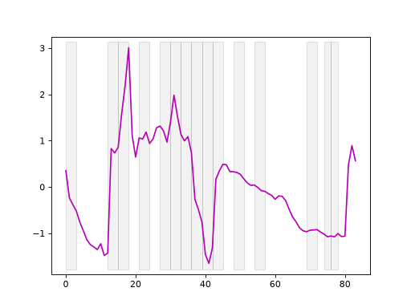
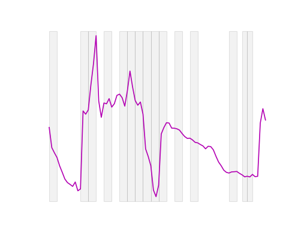
Random intervals#
Interval transformation with randomly sized intervals is a method used in time
series analysis where the data is divided into a random number of intervals,
each with a size that is randomly determined. Specifically, the number of
intervals, n_intervals, is defined in advance, but the size of each
interval is sampled randomly between a minimum size (min_size) and a
maximum size (max_size), both expressed as fractions of the total size of
the input data.
This approach introduces variability into the analysis, allowing for the exploration of patterns that might not be captured by fixed or equally sized intervals. By varying the size of the intervals, we can potentially uncover different trends, anomalies, or seasonal effects that may be hidden when using more traditional, uniform interval methods.
f = IntervalTransform(
intervals="random", n_intervals=30, min_size=0.05, max_size=0.1, random_state=1
)
f.fit(X_train, y_train)
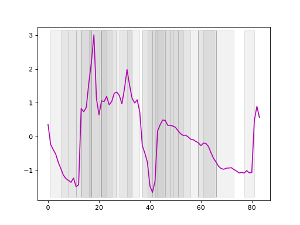
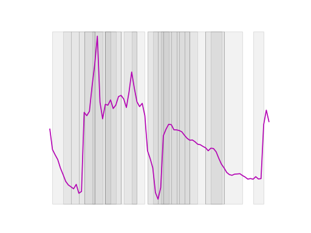
Dyadic intervals#
Dyadic interval transformation is a method where the time series data is recursively divided into smaller and smaller intervals, with each level of recursion (or depth) producing a set of intervals that are twice as many as the previous level. Specifically, at each depth, the number of intervals is determined by \(2^{\text{depth}}\), meaning:
Depth 0: The entire time series is considered as a single interval.
Depth 1: The series is divided into 2 equal-sized intervals.
Depth 2: Each of the intervals from Depth 1 is further divided into 2, resulting in 4 intervals.
Depth 3: Each of the intervals from Depth 2 is divided again, resulting in 8 intervals.
This process continues recursively, producing increasingly smaller and more granular intervals at each depth. Dyadic interval transformation is particularly effective for capturing patterns at multiple scales, allowing for a hierarchical analysis of the data. For time series classification, the method was first described by Depmster et al. (2024) [3].
f = IntervalTransform(intervals="dyadic", depth=5)
f.fit(X_train, y_train)
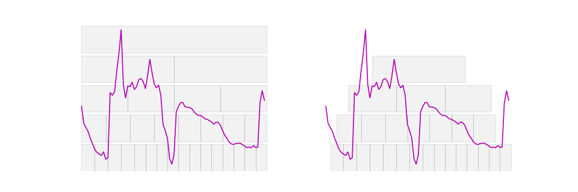
On the left side, we observe dyadic intervals beginning at the first time step, while on the right side, the same dyadic intervals are shifted to start in the middle of the first interval. This adjustment helps capture features in the overlapping regions between intervals.
Feature summarizers#
Regardless of the interval type, the IntervalTransform accommodates various summarizers to calculate one or more features per interval.
"mean"The mean of the interval. No additional parameters.
"variance"The variance of the interval. No additional parameters.
"slope"The slope of the interval. No additional parameters.
"mean_var_slope"The three values: mean, variance and slope for each interval. No additional parameters.
"catch22"The 22 catch22 features. No additional parameters.
"quant"The k = interval_length/v quantiles of the interval. Accepts an additional parameter
v, e.g,summarizer_params={"v": 6}.- A list of functions accepting a nd-array, returning a float
The values returned by the functions
Note
If the summarizer allows additional parameters, we can provide them using summarizer_params
as a dict containing parameter names and their values.
Examples#
Fixed intervals with four intervals and we compute the mean of each interval.
f = IntervalTransform(n_intervals=4, summarizer="mean")
f.fit_transform(X_train[:2])
array([[-0.03208655, 0.67955301, 0.02764482, -0.67511125],
[ 0.719448 , 0.86477128, -0.84775554, -0.73646376]])
Dyadic intervals with a depth of 3 we compute every fourth quantile of the intervals.
f = IntervalTransform(
intervals="dyadic", depth=3, summarizer="quant", summarizer_params={"v": 4}
)
f.fit_transform(X_train[:2])
array([[-1.64988482, -1.35294735, -1.22602081, ..., -0.48196194,
-0.18266071, 0.0414979 ],
[-1.19426882, -1.19426882, -0.87747502, ..., -0.73145568,
-0.71049064, -0.69898474]], shape=(2, 86))
To simplify the use of QUANT [3], Wildboar offers a class
QuantTransform which constructs a transformation
using the "quant" summarizer over three additional time series
representations:
first-order differences
second-order differences
Fourier space
from wildboar.transform import QuantTransform
f = QuantTransform(v=4, depth=3)
f.fit_transform(X_train[:2])
array([[-1.64988482e+00, -1.35294735e+00, -1.22602081e+00, ...,
6.79797679e-03, 5.38542271e-02, 1.57927975e-01],
[-1.19426882e+00, -1.19426882e+00, -8.77475023e-01, ...,
-6.60777092e-04, 5.12075424e-03, 1.46126151e-02]],
shape=(2, 295))
Other transformations#
Wildboar provides various transformations to convert time series into representations that enhance predictive performance.
DiffTransformConvert time series to the n:th order difference between consecutive elements in a time series.
If we have a time series where the values trend upward, applying it with an order of 1 would transform this series into one that highlights changes between consecutive time points, effectively removing the trend and focusing on the rate of change.
DiffTransformis particularly useful when we need to remove trends or seasonality from data, making it more suitable for machine learning models that assume stationarity or when we want to focus on changes rather than absolute values.DtwTransformTransforms data from the time domain to the frequency domain, allowing us to analyze the underlying frequency components.
It is especially valuable when we need to understand the frequency characteristics of data, such as identifying dominant cycles, filtering specific frequencies, or compressing data by focusing on the most significant frequency components.
PAAPAA simplifies a time series by dividing it into equal-sized segments and then averaging the data points within each segment. This results in a compressed representation of the original series, capturing its general trends while reducing noise and detail.
It is particularly valuable when we need to reduce the complexity of time series data while retaining its essential characteristics.
SAXA feature transformation class that implements Symbolic Aggregate Approximation (SAX), a powerful technique for transforming time series data into a symbolic representation. SAX combines Piecewise Aggregate Approximation (PAA) with a discretization process that converts continuous values into a sequence of symbols. This method is particularly effective for reducing the dimensionality and storage requirements of time series data, making it easier to analyze, store, and compare.
To minimize storage requirements,
SaxTransformuses the smallest possible integer type to store the symbolic data.For example, we can convert this continuous data into a sequence of symbols that represent different heart rate levels (e.g., low, medium, high). This symbolic representation can then be used for efficient pattern matching, such as detecting abnormal heart rate patterns across different days.
DerivativeTransformThe derivative of a time series represents the rate of change at each point in time, providing insights into the dynamics of the data, such as trends, turning points, and volatility
It is particularly valuable when we need to focus on the dynamics of time series data, such as identifying trends, detecting changes in momentum, or analyzing volatility.
Support computing the backward difference, central difference and slope difference.
FeatureTransform:A collection of features for the full time series. By default we compute the catch22 features. This is equivalent to
IntervalTransformwithn_intervalsset to1.